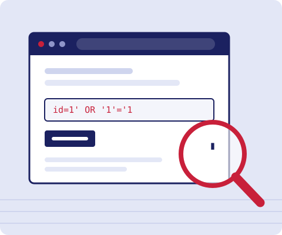

WebPenTest 101
WebPenTest 101Learn how websites get broken, so you can help fix them.
A plain-English introduction to web penetration testing for anyone curious about ethical hacking and unsure where to begin.
Start learningTake the quiz
About us
WebPenTest 101 is our final project for INFO 250. We wanted a place where a beginner can see how penetration testing is organised, read about common problems like injection and the OWASP Top 10, and find safe places to practise.
It is a starting point, not a complete course. When you finish here, the References page tells you where to go next.
Ethical hacking means permission first. Never test a website you don't own or haven't been explicitly allowed to test.
The team
- Harry Vuthy
- Sovan Kanitha Sem
- Sokeng Yom
Instructor: Prof. Monyrath Buntoun
Contact
Found a mistake or have a suggestion? Write to us at team@example.com.